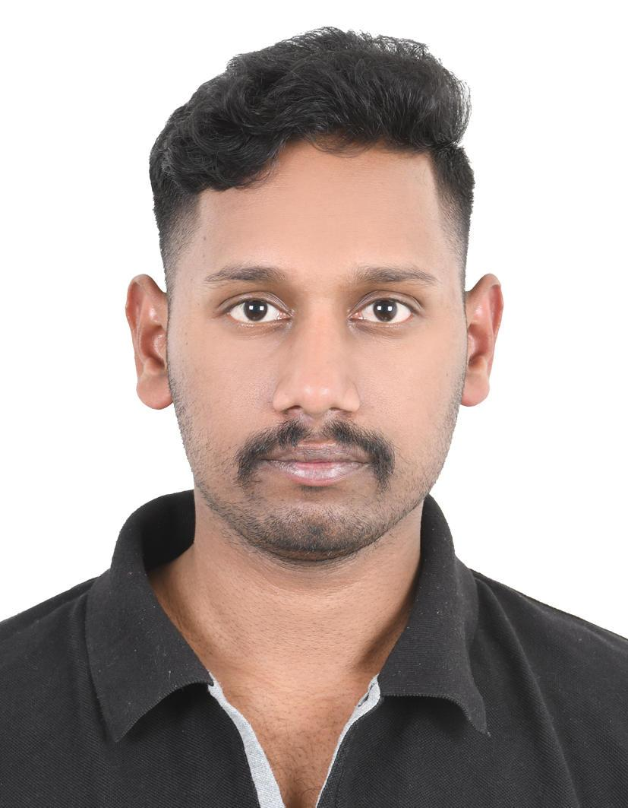

Ganapathi Surya Sai
Durgarao Allaka
$ open to work
Network Engineer / Network Support Engineer / NOC Engineer / IT Support Engineer

$ cat about.md
About Me
Seeking a position in Networking and IT Systems to apply networking knowledge, improve technical skills, and contribute to organizational success while growing in Cloud Networking, Security, and Automation.
- Good knowledge of Cisco networking devices including Catalyst 2960, 3650, 9300 switches, Cisco ISR 2911 and Cisco ASR1001-X edge router.
- Good knowledge of HPE Aruba Networking switches, including CX 6100, CX 6200, and CX 6300 series.
- Good knowledge of network troubleshooting using Wireshark for packet analysis and identifying network connectivity issues.
- Good knowledge of installing and configuring desktops, routers, switches, and other network devices.
- Understanding of IT support tasks, system maintenance, and documentation of devices and network equipment.
$ ls skills/
Technical Skills
The core toolkit I rely on to design, secure, and monitor networks.
$ history
Experience
Apr 2023 — Present
Office Assistant (Contractor)
- Supported daily clinic operations, including documentation, filing, data entry, report preparation, and maintaining accurate and confidential records.
- Assisted patients and visitors with form completion, inquiries, and medical procedures while providing administrative support to medical staff.
- Coordinated appointments, transportation, employee medical scheduling, incoming calls, emails, deliveries, and internal communications.
- Managed scanning, printing, and organization of documents; used Microsoft Word and Excel for data entry and report preparation, ensuring smooth daily office operations.
Mar 2024 — Jul 2025
Network Support Engineer (Self-Employed)
- Configured and managed MikroTik routers and hotspot voucher systems using Mikhmon, maintaining stable network connectivity and reliable internet access.
- Created and managed Wi-Fi vouchers and user profiles with session time limits, bandwidth restrictions, rate limits, burst settings, and access controls.
- Monitored connected hotspot users, network traffic (Tx/Rx), bandwidth usage, and router resources to track and maintain network performance.
- Customized captive portal login pages using HTML, CSS, and JavaScript, and troubleshot hotspot access issues related to MAC-based voucher binding, including randomized MAC address challenges.
$ ls projects/
Projects
Enterprise network, NOC, and IT support projects across Cisco, Aruba, FortiGate, Windows Server, and monitoring platforms.
Network Engineer — Multi-Vendor Enterprise Network
Multi-vendor enterprise network on Cisco, Aruba, and FortiGate with VPNs and Windows Server 2022 services.
NOC Engineer — Network Operations & Monitoring
NOC lab built on PRTG, Zabbix, and ManageEngine OpManager, with ServiceNow ITSM for incident handling.
IT Support Engineer — Enterprise End-User & Remote Support
L1/L2 end-user support covering Windows desktops, Active Directory, LAN/Wi-Fi, VPN, and ServiceNow tickets.
$ cat education.yaml
Education & Certifications
Education
Bachelor of Technology (B.Tech) — CSE (Data Science)
ABR College of Engineering and Technology, Kanigiri, Andhra Pradesh, India
Aug 2024 — Ongoing
Intermediate (12th Grade) — MPC
Sri Chakra Vocational Junior College, Ravulapalem, Konaseema, Andhra Pradesh, India
Jul 2023 — Mar 2024
Secondary School
ZPP High School, Eletipadu, Andhra Pradesh, India
Jul 2011 — Mar 2016
Certifications
Cisco Certified Network Associate (CCNA)
Cisco
February 2026
Credential ID: 2575a52dabe947c89c4f811f81d85773
FortiGate Operator
Fortinet
September 2026
Credential ID: 7368558440GS
Windows Server 2022 — DHCP and DNS
September 2026
Credential ID: 8485938966c1bac1ddb3284e7ea4af5a7c5ceeb3d83dbde7b6bf5e690416430d
Wireshark Network Troubleshooting
Training in network packet analysis, protocol inspection, and troubleshooting connectivity issues using Wireshark.
September 2026
Introduction to ITIL® V4
Introduction training in IT service management, including incident management, service requests, problem management, and service improvement.
July 2026
$ ping ganapathi
Let's Connect
Open to Network, NOC, and IT Support roles. Reach out any time — I usually reply within a day.